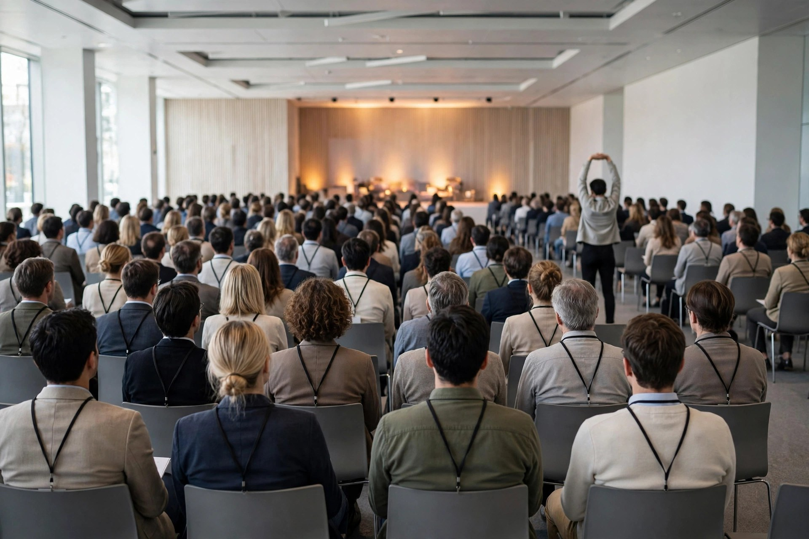

Conference keynote survival: triage the talks, spend your alertness wisely

A school recital lasts two hours and then, mercifully, it ends. A conference lasts nine hours, starts again tomorrow, and hands you a lanyard so everyone can identify the person who fell asleep in row nine. The stakes are different, too. Nobody at a recital is deciding whether to offer you a job, a contract, or a second coffee. At a conference, half the value is in the hallways — and a hallway is a terrible place to be caught mid-drool.
Most stay-awake advice was written for two other rooms entirely: the college lecture hall and the office meeting. Those guides mean well. They suggest sitting up straight, chewing gum, and asking questions, as if every keynote were a seminar of twelve people and a tutor who knows your name. A keynote is a darkened hall, six hundred chairs, a speaker the size of an ant, and a heating system set to “greenhouse.” It needs its own plan. Here it is.
Why conferences are harder than one long talk
Three forces gang up on the conference attendee. The first is simple arithmetic: even a high-energy person has a limited daily budget of genuine attention, and a conference spends it in ninety-minute instalments whether the session deserves it or not. The second is timing. A sleep coach quoted in meeting-survival coverage advises keeping key meetings out of the early afternoon where possible, because the hours right after lunch are a natural energy slump — which is, of course, exactly when conference organisers schedule the big keynote, on the theory that a captive audience cannot leave. The third is atmosphere: steady background hum, warm air, and dimmed lights are a lullaby with a sponsor logo. Constant air-conditioning noise, in particular, gets called out in that same coverage as the kind of unchanging sound that can nudge a tired brain toward sleep.
None of this means the answer is heroic wakefulness from the opening address to the closing panel. Heroism at 9 a.m. becomes a face-plant at 2 p.m., live, in front of the industry. The answer is triage.
The triage framework: green, amber, red sessions
Before the day starts — ideally the night before, coffee in hand, program open — sort every session into one of three colours. This is the whole system, and it takes ten minutes.
Green sessions: full alertness, no negotiation. The talk by the person whose work actually affects yours. The session a colleague specifically asked you to report back on. Anything where you might be called on, quoted, or photographed looking interested for the event album. For green sessions, you sit toward the front, you take real notes, and you deploy every alertness tactic in the book. Note-taking earns its keep here: meeting-survival guides recommend it precisely because writing keeps hands and brain occupied instead of drifting.
Amber sessions: present, pleasant, low burn. Interesting in theory, optional in practice. Sit mid-hall, near an aisle. Listen with one ear while the other ear monitors your eyelids. Take sparse notes — a line per slide is enough to stay loosely tethered. If the session turns out to be a dud, amber status means you may quietly promote the next break into a longer recovery walk without guilt. Observing the room counts as legitimate amber work, too: noticing who else is here, which exhibitors are drawing crowds, and what the recurring buzzwords are is real conference intelligence, gathered with your eyes politely open.
Red sessions: the honest skip. The sponsored talk whose title promises insights and whose abstract promises a product demo. The fifth panel on a topic already covered twice. For red sessions, the dignified move is not to doze in the third row — it is to not be in the row at all. Use that slot for the hallway, the exhibitor floor, a real conversation, or a genuine rest in a quiet corner where sleeping is nobody's business. A skipped session costs nothing. A photographed nap during a sponsor's talk costs exactly the reputation you came to build.
The decision rule is simple: green gets your best, amber gets your presence, red gets your absence — and nobody gets your unconsciousness in a seat you paid to sit in.
The keynote procedure: before, during, between
For green and amber sessions, run the procedure in order:
- Arrive hydrated, and stay that way. Spreading water intake across the day, rather than relying on one heroic coffee, is standard meeting-survival advice for a reason — steady hydration supports steady energy. Keep the bottle at your feet and sip on a schedule, not in a panic.
- Sit up like you mean it. Lecture-survival guidance treats upright posture as an alertness aid and slouching as a one-way ticket to drowsiness. Back against the chair, feet flat, shoulders back. It will not save a truly exhausted person, but it buys a comfortable margin in an ordinary keynote.
- Work the small movements. Between segments, quiet stretches do real work: push the legs forward, circle the ankles, roll the wrists. The guidance is explicit that these should be discreet — circulation for you, not a floor show for the row behind.
- Keep a mint or gum in reserve. Chewing gum or a mint is a classic low-level alertness tactic, and a light snack serves the same purpose. The etiquette rider from the lecture guides applies double at a conference: quiet packaging, quiet chewing, nothing that crunches during a pause.
- Ask one real question in green sessions. Speaking up is repeatedly recommended in meeting advice because a question sharpens attention like nothing else — the heart pounds, the senses wake, the session becomes a conversation instead of a broadcast. One question per green session is a fair quota.
- At the first genuine slide toward sleep, stand up. The advice from physicians quoted in meeting coverage is blunt: when coffee is not enough, get up and stand, or walk. At the back of a keynote hall, standing is normal — people do it to see the slides. Take the gift. Stand for five minutes, then decide honestly whether to sit back down or convert the session to red.
What success looks like: you leave each green session with notes you could brief someone from, you leave each amber session with a line or two and no embarrassment, and the only sessions you slept through are the ones you were never in.
Break options compared
The scheduled break is the conference equivalent of intermission: the one legal recovery window in the day. Most attendees waste it standing in a coffee queue, scrolling a phone in a corridor. Compare the options honestly:
| Break option | Time needed | Recovery value | Watch out for |
|---|---|---|---|
| Daylight walk outside | 10–15 minutes | High — movement plus daylight is the combination meeting-survival physicians point to for returning more alert | Re-entry queues; give yourself a buffer |
| Five-minute unstructured rest | 5 minutes | Surprisingly real — a University of Sydney study found a short break from thinking, away from devices, restored concentration | Scrolling does not count as rest; the screen has to go away |
| Coffee queue and corridor scroll | 15 minutes | Low — caffeine helps, but standing still under fluorescent light while reading a feed is stimulation, not recovery | The queue eats the whole break |
| Quiet-corner eyes-closed reset | 10 minutes, alarm set | Moderate to high, if it stays brief and genuinely out of public view | Never in the hall, never without an alarm, never during a green session |
The dignified exit, and other honest moves
Sometimes, despite triage, posture, mints, and standing, the body files its paperwork and sleep is coming. The conference offers one mercy the school gym does not: adults are allowed to leave. Sit on an aisle for amber sessions precisely so this moment is graceful — stand during a slide change, walk out like a person with a call to take, and recover in the hallway like a professional. Nobody remembers an attendee who slipped out quietly. Everybody remembers the head-jerk, the audible snort, and the slow slide sideways into a stranger.
And keep the sincere footnote from every guide on this site in mind: the point of the trip was never perfect wakefulness. It was showing up, learning the two or three things that will actually change how work gets done, and meeting the people worth meeting. Triage is how a tired person does all three without donating a nap to the event photographer. Sort the sessions, spend alertness where it pays, rest where it is legal — and save the real sleep for the hotel bed, where it can finally be done properly.